Espace Epice


 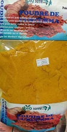
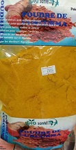
 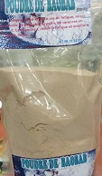
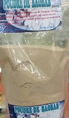

 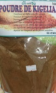
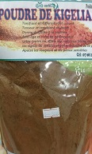


 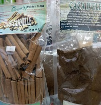
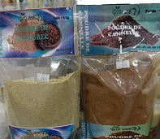
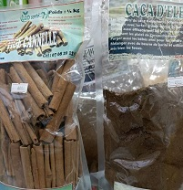
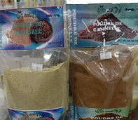

 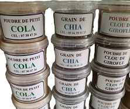
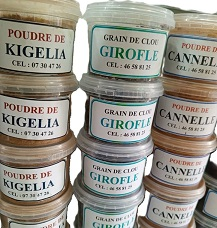
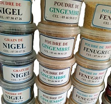
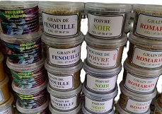
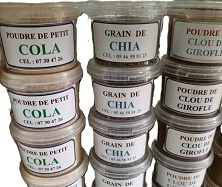
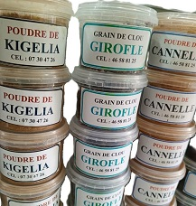
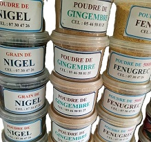
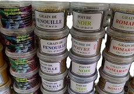
 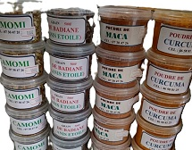
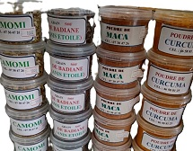


Autres Epices
- Grain de romarin
- Grain de nigel
- Grain de clou de girole
- Curcuma
- Poudre de maca
- Tige de cannelle
- poudre de cannelle
- Cristaux de menthe
- Poudre de laurier
- Feuille de laurier
- Grain de chia
- Poudre de caca d éléphant
- Grain de fenouille
- Poudre de soja
- Poudre de kigelia
- Poudre de cacao
- Origan
- Cristaux de menthe
- Poudre de gingembre
- Grain de coriandre
- Poudre de kojic
- Grain de enugreck
- Poudre de paprika
- Poudre de poivre blanc
- Grain de poivre blanc
- Grain de poivre rouge
- Grain de poivre noir
- Poudre de poivre noir
- Grain de poivre africain
- Poudre de poivre africain
- Camomi
- Grain de badiane
- Grain de moringa
- Rondelles
- Grain de sesame
- Poudre de l ail
- Poudre de petit cola
- Grain de cardamome
- Feuille de sauge
- herbe de provence
- Grain de moutard
- Grain lin
- Poudre de CHEBE
- Fleure de rose
- Griffe de lion
- Poudre de fenouile
- poudre de kankankan
- Maca rouge
- Maca blanc
- Maca noir
- Safran
- Feuille de séné
- Poudre de yam
- Poudre de ginseng
- Poudre de lavande
- Poudre de cacao
- Sel de mer
- Grain d anis
- Feuille de basilic
- Poudre de moringa
- Feuille de thym
- Poure de baobab
- Tige de lavande
- Grain de cadomome
- Noix muscade
- Grain de séné
- Grain de fenugreck
ETC...
numéro du concepteur du site +2250102165641